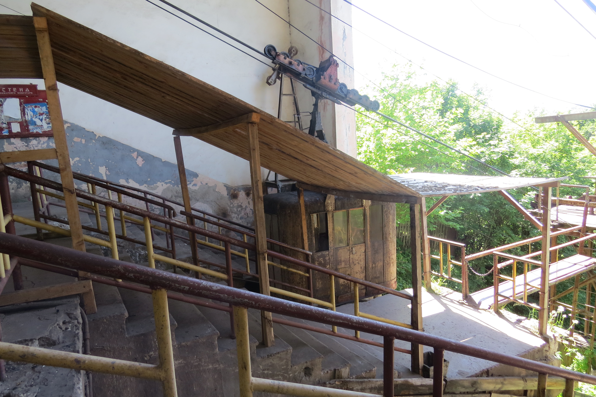
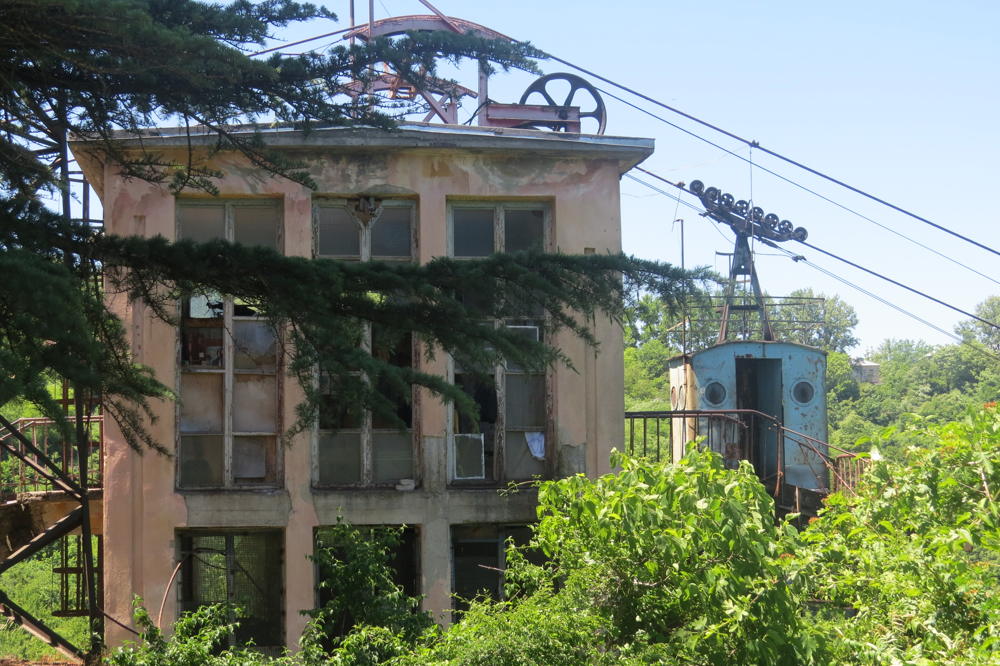
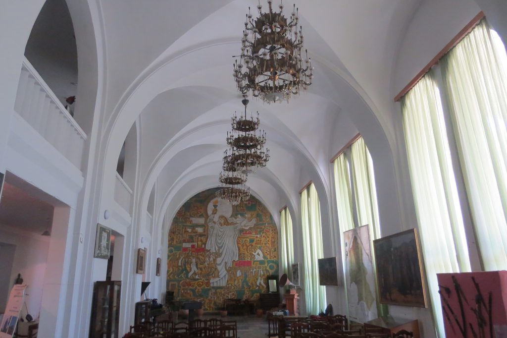
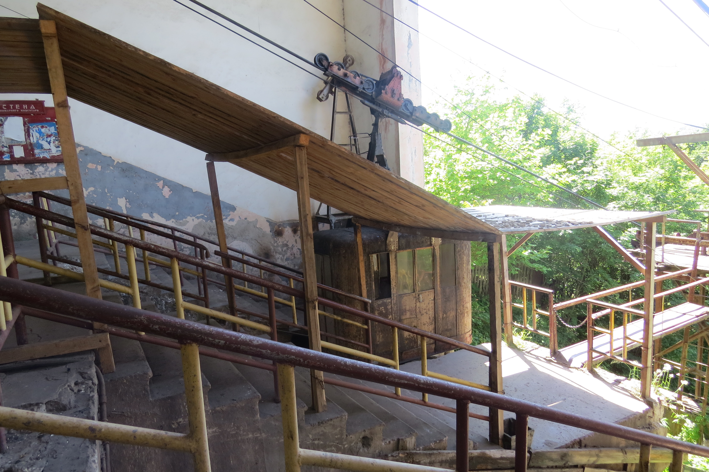
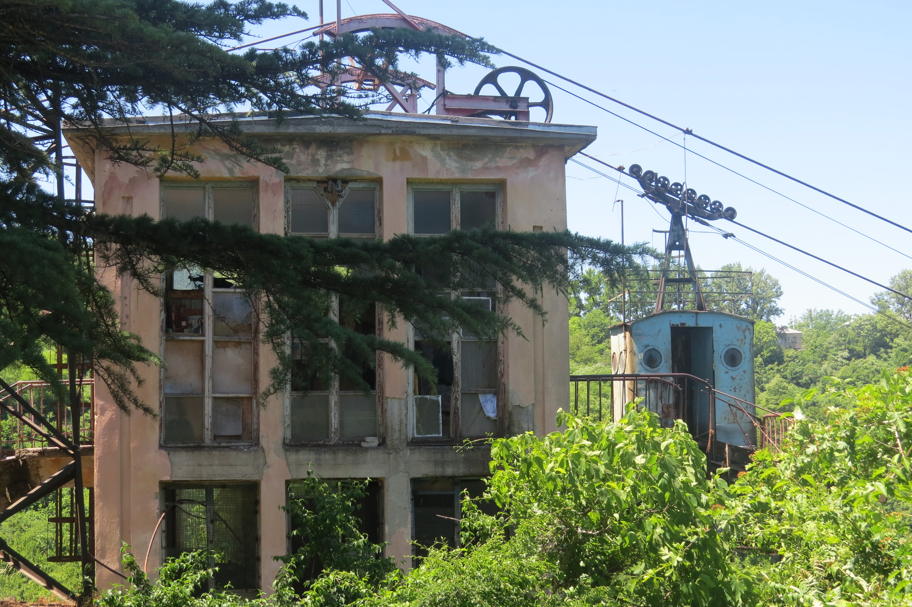
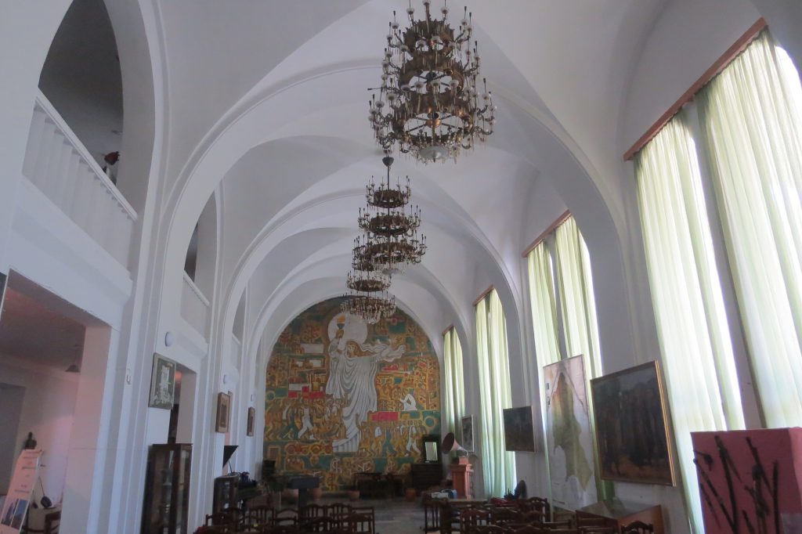
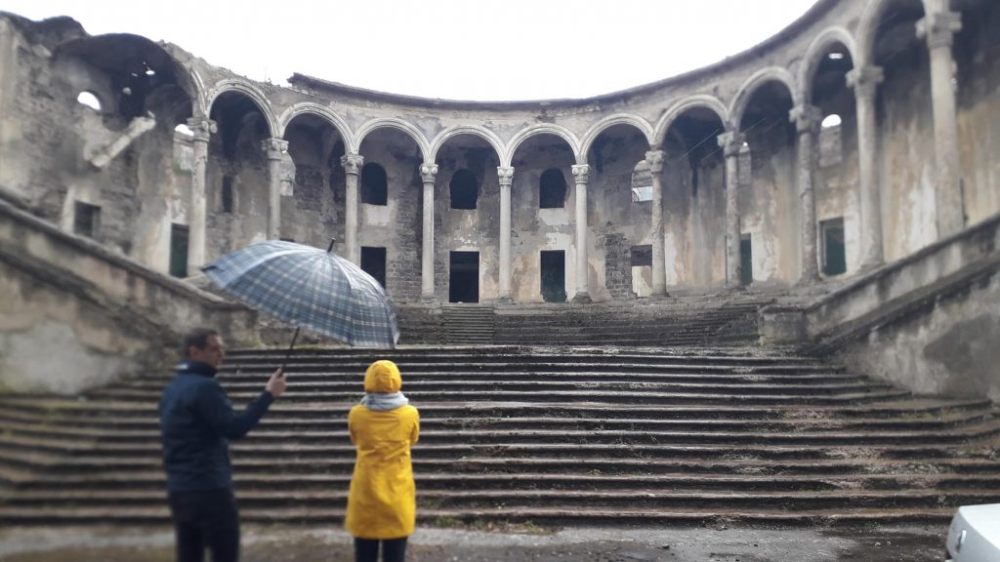
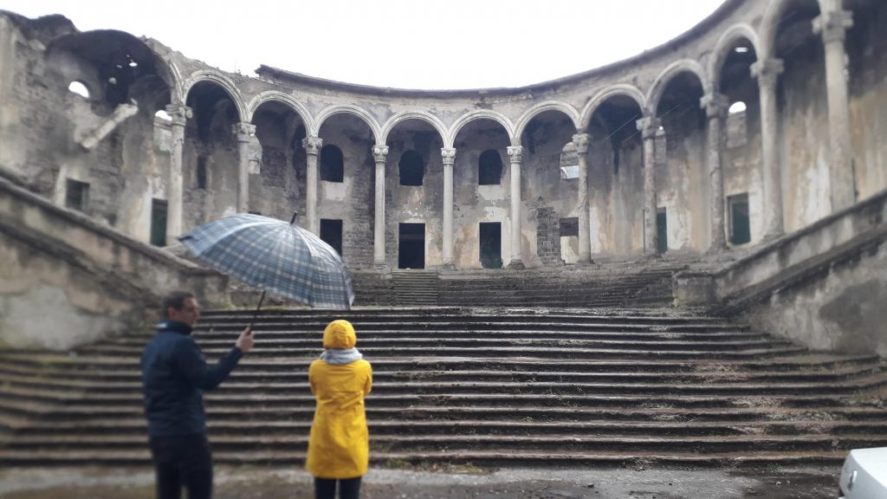

 

Feel an extraordinary atmosphere of Soviet mining town Chiatura. We start from your hotel and head to upper Imereti. In an hour Katskhi’s silhouette appears. At the top of the cliff stands a church built between the 6th and 8th centuries. In ancient times it was revered by locals as a symbol of the god of fertility. People believed that this is a place, where a person could reach closer to the God.
At about 12:00 we arrive in Chiatura, town with an extraordinary view : randomly built high-rise blocks, abandoned constructions, vehicles from the Soviet period, tattered towers of cableways sticking out on the horizon. As if an imaginary worker pressed the “stop” button and everything stood still for decades! In the afternoon, we will visit the Mgvimevi Monastery, built like a nestle in a karst cave on a rock (built by Prince Rati in the 13th century). The complex is richly decorated with ornaments, at some places are preserved frescoes of the early period. From the balcony of this amazing structure, you can see the exploded mountains and rattling mines leading to the heart of the earth.
Have a nice trip with Travel Kutaisi